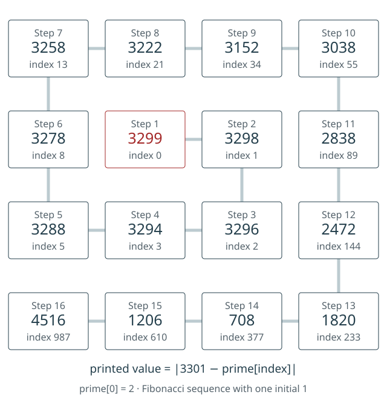

The LP2-15 number panel and heading
Reproduce every number in the Fibonacci-prime spiral, inspect the original panel, and distinguish its construction from proposed cipher rules.
On this page
LP2-15 contains a red runic heading, a 4 × 4 decimal panel, and an open-loop drawing below it. Its combined archive index is 32. Use the release ID when citing it: LP1-15 is a different image with a known keyed reading.

The exact number panel
| Row | Column 1 | Column 2 | Column 3 | Column 4 |
|---|---|---|---|---|
| 1 | 3258 | 3222 | 3152 | 3038 |
| 2 | 3278 | 3299 (red) | 3298 | 2838 |
| 3 | 3288 | 3294 | 3296 | 2472 |
| 4 | 4516 | 1206 | 708 | 1820 |
3299 is the only red number. 708 is the only three-digit entry. Preserve 4516 as printed; its being larger than 3301 is not a reason to change it. The structured page record stores the matrix in its numbers field.
The complete Fibonacci-prime construction
All sixteen printed numbers can be generated by one rule: take Fibonacci values as zero-based prime indices, measure each selected prime’s absolute distance from 3301, and arrange the results in a spiral starting at the red 3299. This reproduces the entire panel, including positive 1206 and 4516. It is an established community construction reproduced here, not a new discovery.
- Use
0, 1, 2, 3, 5, 8, 13, 21, 34, 55, 89, 144, 233, 377, 610, 987. This retains only one of the two initial 1s in the usual Fibonacci sequence0, 1, 1, 2, …. - Use each value F as a zero-based prime index:
prime[0] = 2,prime[1] = 3, and so on. In one-based notation, select the (F + 1)th prime. See prime values and positions. - Calculate
abs(3301 − prime[F]). Absolute distance is nonnegative. - Start at row 2, column 2, the red cell. Move right one, down one, left two, up two, right three, down three, and left three.

| Step | (Row, column) | F | prime[F] | 3301 − prime[F] | Printed absolute value |
|---|---|---|---|---|---|
| 1 | (2, 2) | 0 | 2 | 3299 | 3299 |
| 2 | (2, 3) | 1 | 3 | 3298 | 3298 |
| 3 | (3, 3) | 2 | 5 | 3296 | 3296 |
| 4 | (3, 2) | 3 | 7 | 3294 | 3294 |
| 5 | (3, 1) | 5 | 13 | 3288 | 3288 |
| 6 | (2, 1) | 8 | 23 | 3278 | 3278 |
| 7 | (1, 1) | 13 | 43 | 3258 | 3258 |
| 8 | (1, 2) | 21 | 79 | 3222 | 3222 |
| 9 | (1, 3) | 34 | 149 | 3152 | 3152 |
| 10 | (1, 4) | 55 | 263 | 3038 | 3038 |
| 11 | (2, 4) | 89 | 463 | 2838 | 2838 |
| 12 | (3, 4) | 144 | 829 | 2472 | 2472 |
| 13 | (4, 4) | 233 | 1481 | 1820 | 1820 |
| 14 | (4, 3) | 377 | 2593 | 708 | 708 |
| 15 | (4, 2) | 610 | 4507 | -1206 | 1206 |
| 16 | (4, 1) | 987 | 7817 | -4516 | 4516 |
Why the last two entries matter
The first fourteen selected primes are less than 3301. The next two, 4507 and 7817, are greater. Their signed differences are −1206 and −4516; their absolute distances are the positive numbers on the page. No printed minus signs need to be invented. Conversely, subtracting a positive printed distance from 3301 cannot recover a prime that was above 3301: that inverse operation chooses the wrong side of the reference value.
The community research compilation records the Fibonacci-index spiral, but displays minus signs on those two entries. The original image controls the transcription here. Our ledger preserves its positive values and makes the absolute-distance rule explicit. This citation documents prior reporting; it does not establish who first discovered the construction.
Reproduce all sixteen entries
python scripts/fibonacci_prime_panel.py --check
python scripts/fibonacci_prime_panel.pyThe first command verifies the saved ledger; the second prints every step. The Python script generates primes by trial division, generates the Fibonacci values and spiral, and compares each result with the stored manuscript matrix. It uses only Python’s standard library and works in the reference-data bundle. Download the ledger with source hashes · Download the diagram.

This explains the number panel. It does not yet tell us how to apply the sequence to runes, whether to repeat it, where a key starts, or how interruptions work. Those are separate experimental choices. In particular, the construction does not establish a reading of the red heading.
Straightforward arithmetic
The row sums are 12670, 12713, 12350, and 8250. The column sums are 14340, 11021, 10454, and 10168. The two main diagonals sum to 11673 and 14146. All sixteen entries sum to 45983.
These unequal totals mean that the printed panel is not a magic square under the ordinary equal-line-sums definition. This says nothing about a proposed transformation of the entries; a transformed panel would be a different object and require its own stated rule.
Subtracting the entries from 3301
Choose the explicit operation d = 3301 − printed entry, keeping all sixteen positions. The resulting panel is:
| Row | Column 1 | Column 2 | Column 3 | Column 4 |
|---|---|---|---|---|
| 1 | 43 | 79 | 149 | 263 |
| 2 | 23 | 2 | 3 | 463 |
| 3 | 13 | 7 | 5 | 829 |
| 4 | −1215 | 2095 | 2593 | 1481 |
Fourteen differences are prime. All twelve entries in the first three rows are prime, as are the final two entries of the fourth row. The exceptions are 3301 − 4516 = −1215, which is negative and therefore not prime, and 3301 − 1206 = 2095 = 5 × 419, which is composite.
The red 3299 gives a difference of 2, the first prime. The entry 2838 gives 463; separately, 3299 is the 463rd prime. These are checkable numerical relationships. They do not establish that the page instructs either subtraction or an ordinal lookup. See the two directions of a prime lookup.
This subtraction audit answers a different question from the complete construction above. The construction uses absolute distance from a selected prime; subtracting a printed distance from 3301 is not its unique inverse. Keep that distinction and all sixteen positions explicit. Counting fourteen primes is a descriptive result; judging how surprising it is requires a stated comparison model and an account of how the constant and operation were selected.
Download all sixteen positions as CSV · Download the matrix and checks as JSON. The CSV keeps the printed value and derived difference in separate columns. Row and column coordinates start at one in the image’s original orientation; difference_is_prime is explicitly true or false. Each row also records the operation and source hashes. Sort entire rows to keep those fields together.
Reproduce the difference panel
python scripts/check_number_examples.pyThe output’s lp2_15 object includes the source-record hash, original-image hash, printed matrix, transformed matrix and a Boolean prime flag for each position. Primality is checked by exact trial division through the integer square root. Run from the repository or extracted reference-data bundle with Python 3. The script reads the stored panel and does not modify it or execute a cipher search.
The 880 and 99 numerical chain
A further proposal compares totals from the transformed panel with a new matrix built from the first sixteen primes. The following equalities reproduce. They describe a selected arithmetic relationship; they do not supply a decryption rule.
Of the sixteen differences 3301 − entry, fourteen are prime. Their total is 5953. Including the remaining values, 2095 and −1215, gives 6833. Thus 6833 − 5953 = 2095 − 1215 = 880. These are sums, so no spiral order is needed to reproduce them. A proposed spiral matters only for an operation that uses sequence order.
A separate matrix made from consecutive primes
Construct Q by placing the first sixteen primes in ordinary row order:
2 3 5 7
11 13 17 19
23 29 31 37
41 43 47 53Q is not the matrix printed on LP2-15. Its trace is the main-diagonal sum, 2 + 13 + 31 + 53 = 99. Its determinant is 880. The determinant combines signed products of entries selected from distinct rows and columns; it is not a sum of all entries or a magic constant. Changing how the primes are arranged can change it.
| Panel-derived calculation | Value | Constructed-Q calculation |
|---|---|---|
| 6833 − 5953 | 880 | det(Q) |
| π(6833) − π(5953) | 99 | trace(Q) |
Prime counting is not the totient function
π(n) counts primes less than or equal to n. φ(n) counts integers from 1 through n that are coprime to n. These functions answer different questions. Both 5953 and 6833 are prime, so their totients are one less than the number itself.
| n | Prime count π(n) | Totient φ(n) |
|---|---|---|
| 5953 | 781 | 5952 |
| 6833 | 880 | 6832 |
The difference 99 uses the prime-counting column. Using totients instead gives 6832 − 5952 = 880, not 99. Since both inputs are prime, the totient difference merely reproduces their numerical difference; it is not an additional independent coincidence. See prime values and positions for one-based indexing conventions.
A separate totient calculation also holds: 880 = 2⁴ × 5 × 11, hence φ(880) = 880 × (1 − 1/2) × (1 − 1/5) × (1 − 1/11) = 320. CARNAL and ANALOG have that prime-value sum in the LP1-05 mixed square. Their shared total does not select one as a key. The word-sum experiment distinguishes matching totals from unique word recovery.
Reproduce the fixed chain
python scripts/check_number_examples.pyThe output at lp2_15.constructed_matrix_chain records Q, the two panel-derived sums, prime counts, totients, determinant and trace. The script reads the archived page matrix, constructs Q from primes checked by exact trial division, evaluates all 24 signed determinant terms, and counts coprime integers directly for the totients. It uses integer arithmetic throughout and needs only the reference-data bundle.
This check does not search other constants, matrix layouts, functions, words or keys. It also does not assign a probability to finding such a relationship after exploring those choices. A follow-up cipher test needs to specify how Q, 880, 99 or a candidate word acts on rune positions, which pages it covers, and what would count as success. Keep those variants separate from this arithmetic baseline; see search space and bounds.
The heading is not a known plaintext
The recorded heading has nine runes in groups of four and five: F U L M / A EA Y OE A. EA and OE each label a single rune. These are transliteration labels, not an English translation. The source snapshot does not establish “CRYING” or another plaintext for this heading.
The drawing below the panel
The page annotation describes two open lobes with a crossing, resembling an infinity sign; visible gaps remain. Shape resemblance does not establish that the author intended a particular Unicode character, its code point, or a numerical transformation of that code point. Keep the observed drawing separate from those proposed operations.
How to reproduce the totals
import json
from pathlib import Path
p = json.loads(Path("data/pages/lp2-15.json").read_text(encoding="utf-8"))
a = p["numbers"]
assert len(a) == 4 and all(len(row) == 4 for row in a)
print("rows", [sum(row) for row in a])
print("columns", [sum(row[c] for row in a) for c in range(4)])
print("diagonals", sum(a[i][i] for i in range(4)),
sum(a[i][3-i] for i in range(4)))
print("total", sum(map(sum, a)))This is a check of the published transcription, not a cipher experiment or a new image audit. Compare the matrix to the original in the reader before using it as an input.
Following a numerical idea
The prime-index guide checks the arithmetic involving 3299, 30557, 9467, and 98597. The emirp guide distinguishes decimal reversal from mirroring and unspecified “inversion.” A valid calculation does not by itself connect LP2-15 with LP2-00–02. Record that proposed connection as a hypothesis with explicit operations and scope.
Sources
Original image, annotations, and archive provenance · Pinned number and rune transcription. Visual observations follow the existing page annotations; the totals above are derived arithmetic.
See also: illustrated index · dots and punctuation · Möbius and the crossed loop.